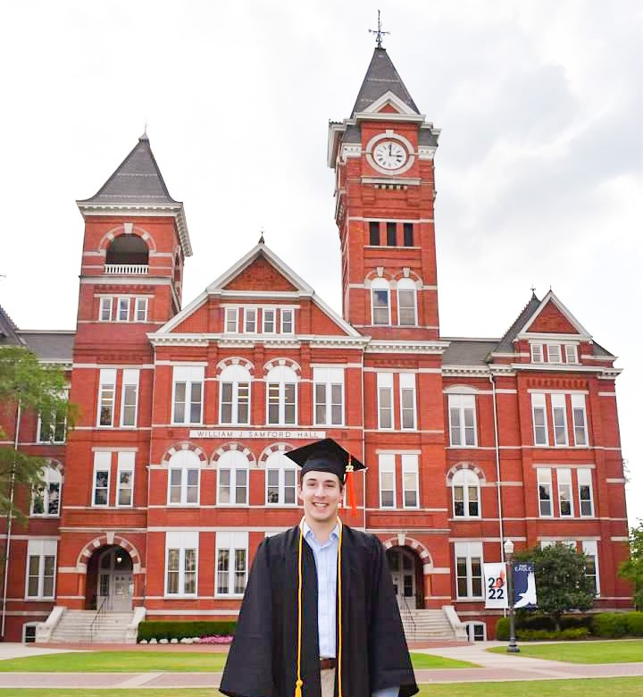

Chace Taylor Claborn
Manufacturing Process Engineer II at Blue Origin
Education
B.S. Mechanical Engineering
Auburn University • 2022
GPA: 3.79
Technical Skills
CAD/CAM & Engineering Software
Creo Parametric
Siemens NX
SolidWorks
Windchill PLM
Vericut
Programming & Data Analysis
Python
SQL
MATLAB
G-Code
Siemens 840D
Redash
Databricks
Tableau
Manufacturing & Quality
GD&T
CNC Programming
3D Printing
CMM/PolyWorks
LEAN Manufacturing
Instrumentation
Testing
R&D
Project Management
ITS JIRA
Internal MES
Microsoft Office
Professional Experience
Manufacturing Engineer I-II
Blue Origin, Huntsville, AL | July 2022 to Present (45-50 hours per week)
Component Manufacturing Engineer I-II
- Lead GD&T application and design-for-manufacturability feedback for turbomachinery, valves, and other engine components - reducing cycle time, minimizing non-conformances, and improving part Cpk values.
- Leverage CAD/CAM software to design custom fixtures and tooling, analyze CNC programs, redline engineering drawings, generate exploded assembly views—supporting efficient machining and enhanced part manufacturability.
- Drive machining process development and standardization for CNC operations in support of rocket engine hardware.
- Designed and implemented CNC probing routines and macros to streamline setup processes, reduce manual intervention, and eliminate variation in critical dimensions.
- Led iterative NPI process refinement, utilizing root cause analysis and continuous feedback loops to optimize machining techniques and drive successful production outcomes.
- Collaborate with external vendors to implement cutting tool trials and enhance software (e.g., Vericut for CNC simulation, PLC programming for Hydroforming press) to improve machining precision and process efficiency.
- Organize best practices, conduct RCCAs, and facilitate knowledge transfer among machinists and programmers.
Component Manufacturing Engineer I-II
- Develop and update manufacturing work instructions and support the shop floor for BE-4 and BE-3U rocket engine components such as turbomachinery, valves, and various other components.
- Perform comprehensive engineering analysis and dispositions of non-conformances, applying advanced problem-solving techniques to ensure compliance with design specifications and production standards.
- Defines, develops, implements, and optimizes Hydroformed parts and equipment consisting of exotic materials, dies, and other supporting tooling; operates, troubleshoots, and programs recipes for new hardware.
- Utilize Python and SQL for data analysis, creating queries and scripts to identify trends, track non-conformances, and support manufacturing improvements (e.g., building dashboards and visualizations on Redash and Databricks).
- Apply Lean manufacturing principles to streamline workflows and drive continuous improvement, utilizing ITS JIRA to track team progress, manage tasks, and align objectives with operational goals.
- Track project milestones and collaborate with cross-functional teams to ensure on-time delivery of insourced components, driving vertical integration and enhancing production workflow.
Systems/Test Engineer Intern
Aerojet Rocketdyne, Huntsville/Decatur, AL | May 2021 to August 2021 (40 hrs/week)
- Reviewed and updated Field Service Manuals that specified rocket engine test procedures for Atlas/Delta RL10.
- Monitored rocket engine testing & assembly to ensure procedures were followed and safety precautions were observed.
- Performed inspection of engine components, interfaces, and test configuration to ensure acceptability per procedures.
- Developed an operational procedure that specified the handling and usage of rocket motor/engine shock recorders.
Process Engineer/Quality Inspector Intern
Precision Grinding Inc., Birmingham, AL | May 2020 to January 2021 (36 hrs/week)
- Responsible for reading detailed drawings and close-tolerance part inspection of machined and fabricated steel parts.
- Wrote scripts for Hexagon Romer Arm on PolyWorks to inspect and reverse-engineer parts using CMM and utilized manual gauges for precision measurements.
- Documented inspection results and generated quality reports, applying GD&T controls for compliance.
- Accomplished writing a Standard Operating Procedure for CMM to help future company employees.
Machine Shop Department Intern (Part-Time)
WhiteFab Inc., Birmingham, AL | May 2017 to August 2020 (2 hrs/week)
- Gained experience with CNC Vertical Machines, CAD, lathes, forklifts, overhead cranes, and fabrication of steel parts.